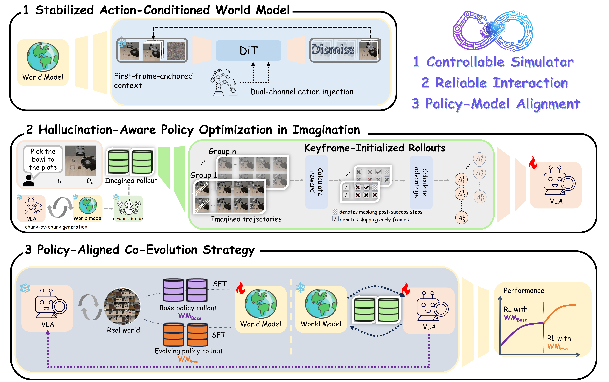
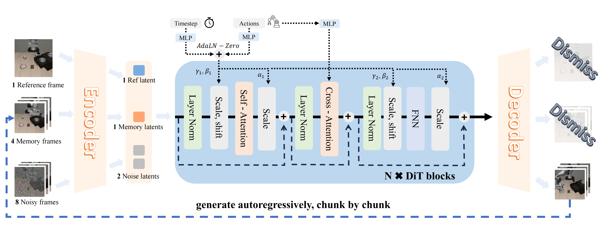
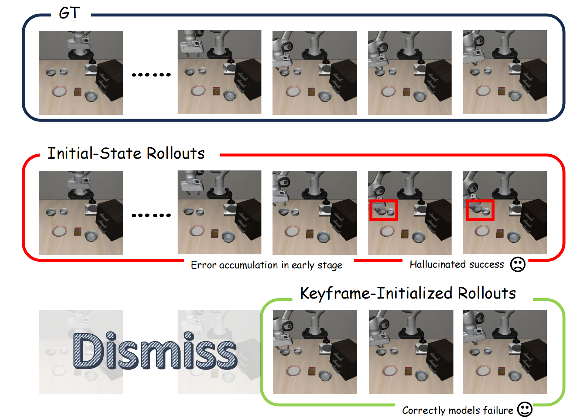
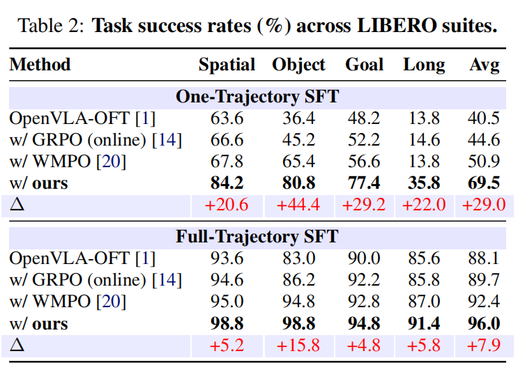
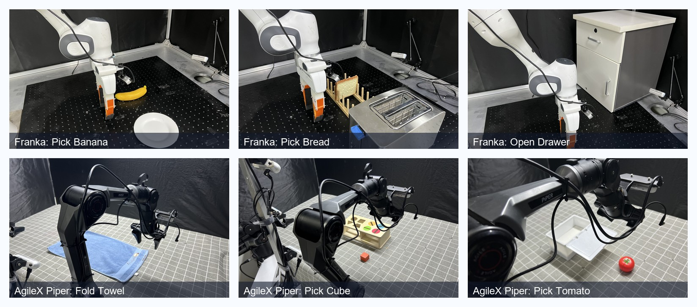

Real Robot
Real-World Execution Video
OpenVLA-OFT + Franka
Failure Mode in SFT
Success Mode in RL
Observed Advantage
pick banana
Failed transport
RL success
- More stable execution.
- Almost no post-grasp transport failures.
- Fewer initial grasp failures.
pick bread
Premature release
Gripper release failure
RL success
- More reliable transport after grasp.
- Fewer premature release cases.
- Better end-to-end completion stability.
pull drawer
Missed handle
No effective pull
RL success
- More stable handle approach.
- Fewer missed-handle failures.
- More effective pull after contact.
Project Page
arXiv 2602.13977
Published February 15, 2026
WoVR: World Models as Reliable Simulators for Post-Training VLA Policies with RL
* Equal contribution † Corresponding authors
1 Tsinghua University 2 University of Chinese Academy of Sciences
3 Institute of Automation, Chinese Academy of Sciences 4 Zhongguancun Academy 5 Infinigence AI

Reliability-aware optimization in imagination: a controllable simulator, hallucination-aware interaction, and policy-simulator co-evolution.
WoVR turns learned world models into reliable simulators for reinforcement learning by explicitly controlling hallucination at the simulator, interaction, and alignment levels.
Overview
Abstract
Reinforcement learning (RL) promises to unlock capabilities beyond imitation learning for Vision-Language-Action (VLA) models, but its requirement for massive real-world interaction prevents direct deployment on physical robots. Recent work attempts to use learned world models as simulators for policy optimization, yet closed-loop imagined rollouts inevitably suffer from hallucination and long-horizon error accumulation. Such errors not only degrade visual fidelity, but also mislead policy optimization by providing unreliable learning signals.
We propose WoVR, a reliable world-model-based RL framework for post-training VLA policies. Instead of assuming a faithful world model, WoVR explicitly regulates how RL interacts with imperfect imagined dynamics. It improves rollout stability through a controllable action-conditioned video world model, reshapes imagined interaction to reduce effective error depth via Keyframe-Initialized Rollouts (KIR), and maintains policy-simulator alignment through World Model-Policy co-evolution.
Extensive experiments demonstrate that WoVR enables stable long-horizon imagined rollouts and effective policy optimization, achieving superior LIBERO performance and consistent real-world gains across multiple robotic platforms. These results show that world models can serve as practical simulators for RL when hallucination is explicitly controlled.
The central question
If world models inevitably hallucinate under closed-loop rollouts, how can reinforcement learning remain reliable instead of learning to exploit simulator errors?
Method
A Reliability-Driven World-Model RL Pipeline
WoVR regulates reliability at three interconnected levels: simulator-level control, interaction-level reshaping, and alignment-level co-evolution.
01
Stabilized Action-Conditioned World Model
WoVR upgrades a video diffusion backbone into an action-controllable, rollout-stable simulator with dual-channel action injection and first-frame anchoring. This reduces long-horizon drift and keeps imagined trajectories responsive to policy actions.
- Dual-path action conditioning for local modulation and global control.
- First-frame anchoring to preserve scene structure across autoregressive chunks.
- Noisy context training to narrow the train-inference gap.

02
Hallucination-Aware Interaction with KIR
Instead of always rolling out from the episode start, Keyframe-Initialized Rollouts (KIR) start part of the imagined trajectories near task-critical states. This shortens the effective prediction depth and keeps policy learning closer to physically meaningful transitions.
- Initialize rollouts near critical contacts and failure states.
- Shorten the prefix the world model must predict before decisive moments.
- Reduce hallucination compounding and spurious long-horizon success.

03
PACE: Policy-Simulator Co-Evolution
Policy optimization changes the action distribution, which can make a previously reliable world model drift out of regime. PACE periodically refreshes the simulator with new data gathered under the updated policy so the world model stays aligned with the behavior it is asked to simulate.
Mitigates distribution shift
Preserves simulator reliability
Supports scalable on-policy optimization in imagination
Results
Updated Results from the Latest CoRL Version
The latest paper version expands evaluation to stronger initialization settings and multi-platform real-world transfer while keeping the same core conclusion: reliable imagination leads to better downstream RL.
World model quality
23 FPS
Under 512-step autoregressive rollout, WoVR achieves the strongest simulator quality among EVAC, Cosmos-Predict2, OpenSora, and WoVR, while remaining substantially faster at inference time.
LPIPS
0.091
@512 rollout
FID
34.252
best overall
FVD
68.011
best overall
FloLPIPS
0.154
best overall
LIBERO policy gains
40.5% → 69.5%
Under one-trajectory SFT, WoVR substantially outperforms OpenVLA-OFT, limited-budget online GRPO, and world-model-based WMPO. The latest paper also reports that WoVR remains strongest under full-trajectory SFT, reaching 96.0% average success.

Real-world transfer on two robotic platforms
51.1% → 80.0%
The latest version evaluates three tasks on Franka Emika Panda and three tasks on AgileX Piper. WoVR improves both platforms without additional online real-world RL.

Franka Emika Panda
80.0%
Base 51.1 / WoVR 80.0 / +28.9
Pick Banana 86.7, Pick Bread 90.0, Open Drawer 63.3
AgileX Piper
28.9%
Base 15.5 / WoVR 28.9 / +13.4
Fold Towel 20.0, Pick Cube 33.3, Pick Tomato 33.3
Generalization to a different VLA backbone
34.4% → 56.7%
Using π0.5 as the VLA backbone on AgileX Piper, WoVR still delivers clear gains when combined with Flow-SDE policy optimization.
Fold Towel
30.0%
+10.0
Pick Cube
86.7%
+26.7
Pick Tomato
53.3%
+30.0
Average
56.7%
+22.3
Simulator
WoVR is both faster and more stable than prior world-model baselines under long-horizon rollout.
Policy
Reliable imagination consistently outperforms limited-budget online RL and previous world-model RL.
Transfer
Performance gains carry over to different platforms and even to a different VLA backbone.
Media
Supplementary Videos
Project Presentation
Citation
BibTeX
@misc{jiang2026wovr,
title = {WoVR: World Models as Reliable Simulators for Post-Training VLA Policies with RL},
author = {Jiang, Zhennan and Zhou, Shangqing and Jiang, Yutong and Huang, Zefang and Wei, Mingjie and Chen, Yuhui and Zhou, Tianxing and Guo, Zhen and Lin, Hao and Zhang, Quanlu and Wang, Yu and Li, Haoran and Yu, Chao and Zhao, Dongbin},
year = {2026},
journal = {arXiv preprint arXiv:2602.13977}
}